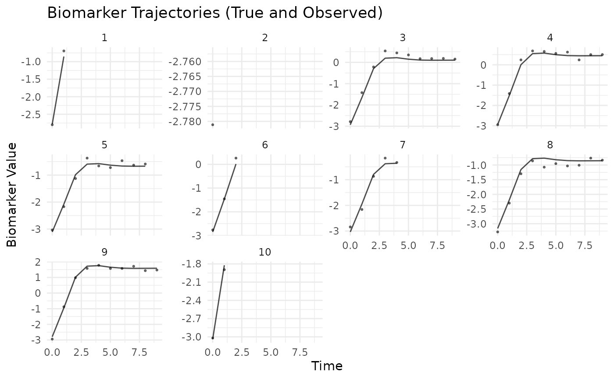
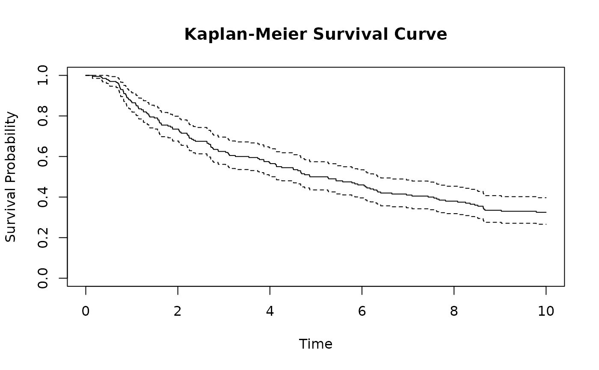
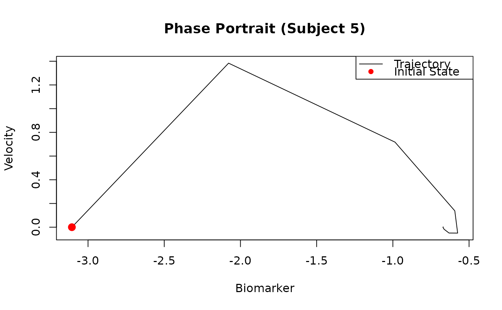

A pre-computed dataset comprising longitudinal biomarker trajectories and
time-to-event outcomes for 200 simulated subjects. This dataset was
generated using the internal function .create_example_data() which
calls simulate with default parameters and seed = 123.
The biomarker trajectories follow a damped harmonic oscillator model
with subject-specific initial conditions and external forcing.
Format
A list with two components:
dataA list containing the actual simulated data with:
longitudinal_dataA data frame containing longitudinal observations with columns: id (subject identifier), time (measurement time), observed (biomarker with error), biomarker (true value), velocity, acceleration, x1, x2
survival_dataA data frame containing survival information for 200 subjects with columns: id, time (event/censor), status (1=event, 0=censored), w1, w2, b (random effect)
stateA 200 × 2 matrix containing initial conditions \([m_i(0), \dot{m}_i(0)]\) for each subject
initInitial parameter values for model fitting containing coefficients and configurations
Details
Data Generation Process
Generated using .create_example_data(n_subjects = 200, seed = 123),
with follow-up period from 0 to 10 time units and shared random effect
\(b_i \sim \mathcal{N}(0, 0.01)\) (sd = 0.1).
Model Specification
Longitudinal Sub-model (Damped Harmonic Oscillator):
The biomarker trajectory follows: $$\ddot{m}_i(t) + 2\xi\omega\dot{m}_i(t) + \omega^2 m_i(t) = k\omega^2[f_0 + \mathbf{X}_i^T\boldsymbol{\beta}_{exc}]$$
With parameters:
Damping ratio: \(\xi = 0.707\) (slightly underdamped)
Natural period: \(T = 5\), giving \(\omega = 2\pi/5\)
Excitation amplitude: \(k = 1.0\)
Excitation offset: \(f_0 = 0.0\)
Excitation coefficients: \(\boldsymbol{\beta}_{exc} = (0.8, -0.5)^T\)
Initial conditions: $$m_i(0) = -3.0 + \mathbf{X}_i^T\boldsymbol{\beta}_{init} + 0.2 b_i, \quad \dot{m}_i(0) = 0$$ where \(\boldsymbol{\beta}_{init} = (0.1, -0.1)^T\) and \(b_i\) is the random effect.
Observed measurements: $$y_{ij} = m_i(t_{ij}) + b_i + \epsilon_{ij}, \quad \epsilon_{ij} \sim \mathcal{N}(0, 0.01)$$
Survival Sub-model: $$\lambda_i(t) = \frac{1.5}{8}\left(\frac{t}{8}\right)^{0.5} \exp(0.3m_i(t) + 1.0\dot{m}_i(t) + \mathbf{W}_i^T\boldsymbol{\phi} + b_i)$$
where \(\boldsymbol{\phi} = (0.4, -0.6)^T\) for covariates w1 and w2.
Examples
# Load the simulated dataset
data(sim)
# Explore the data structure
str(sim$data, max.level = 2)
#> List of 3
#> $ longitudinal_data:'data.frame': 1225 obs. of 8 variables:
#> ..$ id : int [1:1225] 1 1 2 3 3 3 3 3 3 3 ...
#> ..$ time : num [1:1225] 0 1 0 0 1 2 3 4 5 6 ...
#> ..$ observed : num [1:1225] -2.799 -0.694 -2.781 -2.786 -1.423 ...
#> ..$ biomarker : num [1:1225] -2.784 -0.853 -2.756 -2.932 -1.652 ...
#> ..$ velocity : num [1:1225] 0 2.6 0 0 1.72 ...
#> ..$ acceleration: num [1:1225] 7.232 -0.433 6.934 4.796 -0.287 ...
#> ..$ x1 : num [1:1225] 2.199 2.199 1.312 -0.265 -0.265 ...
#> ..$ x2 : num [1:1225] -0.0736 -0.0736 -1.1687 -0.6347 -0.6347 ...
#> $ survival_data :'data.frame': 200 obs. of 6 variables:
#> ..$ id : int [1:200] 1 2 3 4 5 6 7 8 9 10 ...
#> ..$ time : num [1:200] 1.201 0.815 10 10 8.231 ...
#> ..$ status: int [1:200] 1 1 0 0 1 1 1 0 0 1 ...
#> ..$ w1 : num [1:200] 1.074 -0.0273 -0.0333 -1.5161 0.7904 ...
#> ..$ w2 : int [1:200] 1 0 0 1 1 0 1 0 1 0 ...
#> ..$ b : num [1:200] -0.05605 -0.02302 0.15587 0.00705 0.01293 ...
#> $ state :'data.frame': 200 obs. of 2 variables:
#> ..$ biomarker: num [1:200] -2.78 -2.76 -2.93 -2.94 -3.11 ...
#> ..$ velocity : num [1:200] 0 0 0 0 0 0 0 0 0 0 ...
# Summary statistics for longitudinal data
summary(sim$data$longitudinal_data[, c("biomarker", "velocity")])
#> biomarker velocity
#> Min. :-3.34702 Min. :-0.1034036
#> 1st Qu.:-1.87591 1st Qu.:-0.0142875
#> Median :-0.82751 Median : 0.0009532
#> Mean :-0.92588 Mean : 0.3649189
#> 3rd Qu.: 0.01411 3rd Qu.: 0.6354103
#> Max. : 2.57174 Max. : 2.8726947
# Check event rate
mean(sim$data$survival_data$status)
#> [1] 0.675
# Visualize biomarker trajectories for first 10 subjects
library(ggplot2)
library(dplyr)
#>
#> Attaching package: ‘dplyr’
#> The following objects are masked from ‘package:stats’:
#>
#> filter, lag
#> The following objects are masked from ‘package:base’:
#>
#> intersect, setdiff, setequal, union
sim$data$longitudinal_data %>%
filter(id <= 10) %>%
ggplot(aes(x = time, y = biomarker, group = id)) +
geom_line(alpha = 0.7) +
geom_point(aes(y = observed), size = 0.5, alpha = 0.5) +
facet_wrap(~id, scales = "free_y") +
theme_minimal() +
labs(title = "Biomarker Trajectories (True and Observed)",
x = "Time", y = "Biomarker Value")
#> `geom_line()`: Each group consists of only one observation.
#> ℹ Do you need to adjust the group aesthetic?

# Survival analysis
library(survival)
# Kaplan-Meier curve
km_fit <- survfit(Surv(time, status) ~ 1, data = sim$data$survival_data)
plot(km_fit, main = "Kaplan-Meier Survival Curve",
xlab = "Time", ylab = "Survival Probability")

# Examine relationship between initial biomarker and survival
sim$data$survival_data$initial_biomarker <- sim$data$state[, "biomarker"]
cox_fit <- coxph(Surv(time, status) ~ w1 + w2, data = sim$data$survival_data)
summary(cox_fit)
#> Call:
#> coxph(formula = Surv(time, status) ~ w1 + w2, data = sim$data$survival_data)
#>
#> n= 200, number of events= 135
#>
#> coef exp(coef) se(coef) z Pr(>|z|)
#> w1 0.34779 1.41593 0.08653 4.019 5.84e-05 ***
#> w2 -0.32262 0.72425 0.17344 -1.860 0.0629 .
#> ---
#> Signif. codes: 0 ‘***’ 0.001 ‘**’ 0.01 ‘*’ 0.05 ‘.’ 0.1 ‘ ’ 1
#>
#> exp(coef) exp(-coef) lower .95 upper .95
#> w1 1.4159 0.7062 1.1951 1.678
#> w2 0.7242 1.3807 0.5155 1.017
#>
#> Concordance= 0.601 (se = 0.025 )
#> Likelihood ratio test= 18.63 on 2 df, p=9e-05
#> Wald test = 18.2 on 2 df, p=1e-04
#> Score (logrank) test = 18.42 on 2 df, p=1e-04
#>
# Verify ODE dynamics - compare numerical solution with data
# Extract parameters used in simulation
omega <- 2 * pi / 5 # Natural frequency
xi <- 0.707 # Damping ratio
# Check phase space (velocity vs biomarker)
subject_5 <- sim$data$longitudinal_data[
sim$data$longitudinal_data$id == 5,
]
plot(subject_5$biomarker, subject_5$velocity,
type = "l", main = "Phase Portrait (Subject 5)",
xlab = "Biomarker", ylab = "Velocity")
points(subject_5$biomarker[1], subject_5$velocity[1],
col = "red", pch = 16, cex = 1.5)
legend("topright", c("Trajectory", "Initial State"),
col = c("black", "red"), pch = c(NA, 16), lty = c(1, NA))
